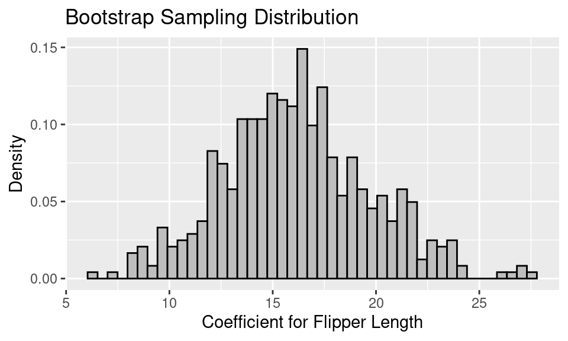

Bootstrapping
Another Approach to Confidence Intervals
The confidence intervals we created in the last set of notes relied upon the normal distribution to build an interval to capture a population parameter with a particular confidence. Hopefully the thought-experiments assured you that sampling distributions often follow a bell-shaped distribution, so the use of the normal distribution was justified. If you’re itching for a formal explanation for why the sampling distribution will follow a normal distribution, this is precisely the role of one of the most central mathematical results in statistics: the Central Limit Theorem.
The Central Limit Theorem says, in brief, that sums of random variables will follow a normal distribution as the sample size grows large1. A vast array of useful statistics - means, proportions, differences in two means, differences in two proportions - can be cast as sums of random variables, so at large sample sizes we can be confident that the normal distribution is a good approximation of the sampling distribution. But what happens when you’re looking at a statistic that cannot be cast as a sum of random variables? What if your sample size is not large? How else can you approximate the sampling distribution of a statistic?
Until several decades ago, the toolbox for answering these questions was limited. With the advent of powerful computers and a brilliant and simple insight into the relationship between the sample and the population, however, we have a new tool for assessing sampling variability. That tool is the bootstrap.
The Bootstrap
The bootstrap is based on the observation that if your sample is representative of the population, then the empirical distribution should be a good stand-in for the population distribution. One can then simulate the process of drawing multiple samples from the population by drawing new samples (called resamples) from the empirical distribution.
- The Bootstrap Algorithm
-
A procedure used to assess sampling variability in statistics. To bootstrap a statistic,
- Treat the sample as a bootstrap population
- Draw a new sample (with replacement) from the bootstrap population
- Calculate the statistic of interest on the new sample
- Repeat steps 2 and 3 many times to build up a bootstrap sampling distribution
The name of the procedure is derived from the idiom, “to pull yourself up by your own bootstraps”. This illustrates the somewhat miraculous nature of this procedure. While in reality you only ever get to see a single sample drawn from the population, the bootstrap allows you to use that sample to generate many more samples through the process of sampling with replacement.
To illustrate this procedure, consider the toy example below, where we aim to estimate the sampling variability in calculating a proportion using a sample of size \(n=5\) penguins.
On the left is the data frame containing the original sample containing one column of the names that identify each unit and a second column with the variable of interest, a variable generically called \(X\) that takes values 1 and 0. The observed statistic in this data frame is \(\hat{p}=2/5\). This original sample will serve as the bootstrap population.
In step two of the algorithm, we draw a sample of size \(n=5\) from the bootstrap population, with replacement. This first bootstrap sample is shown at the top and features Ida, Gus, Abe, Gus again, and Ola. This is an important feature of sampling with replacement: some units might be drawn multiple times (Gus) and others might not be drawn at all (Luz). From this first bootstrap sample, we can compute the first bootstrap statistic \(\hat{p}_{b1} = 1/5\). This is step three.
For step four we repeat this process of drawing a bootstrap sample and calculating another bootstrap statistic. In the diagram, two additional statistics are calculated, but in practice this process will be repeated many many times. The result of this procedure is the bootstrap distribution, on the right, which is the collection of all of the statistics you observed across the different bootstrap samples.
Note this just a toy example. With \(n=5\), the sample is unlikely to represent the important features of the population, and the bootstrap should not be applied. At a more reasonable sample size, however, this bootstrap distribution will become a good approximation of the sampling distribution and therefore can be used to calculate a confidence interval.
- Bootstrap Confidence Interval (percentile method)
- For a 95% confidence interval, the interval spans the middle 95% of the bootstrap statistics which is equivalent to finding the 2.5% and 97.5% quantiles of the bootstrap distribution. The confidence level can be adapted by modifying the quantiles accordingly.
Let’s see the bootstrap in practice in two settings with two very different statistics.
Example 1: Food Safety Scores
Let’s create the bootstrap sampling distribution for the example of food safety scores from the earlier notes on confidence intervals. In this example, we looked at a sample of 100 food safety scores drawn from all restaurants in San Francisco. When bootstrapping, that empirical distribution becomes the bootstrap population.
Next, to approximate the bootstrap sampling distribution, we proceed with a simulation. We take a sample of 100, this time with replacement, from the bootstrap population, and we compute the mean food safety score. This process gets repeated 500 times, and the distribution of the 500 bootstrap means gives us an estimate of the bootstrap sampling distribution.
The bootstrap sampling distribution looks like the following.
This approach to bootstrapping uses the
infer R package. Details of its use can be found in the Ideas in Code section at the end of these notes.A few things to note about this bootstrap sampling distribution:
The overall shape of the bootstrap sampling distribution mirrors the general shape of the true sampling distribution from the last notes.
The mean of the sampling distribution, 86.23, nearly matches the mean of the bootstrap population, 86.27, which in turn matches the original sample mean. But, it does not quite match the mean of the original population, 87.6.
The SE of the bootstrap sampling distribution, 0.99, matches the SD(bootstrap pop)/\(\sqrt{100}\), which is also 0.99. This bootstrapped SE is a decent estimate of the SE of the true sampling distribution, 0.89.
To form a 95% confidence interval for the population mean, we can find the quantiles that mark off the middle 95% of the bootstrap distribution. For the distribution above, this would be:
.
get_ci(boot, level = .95)# A tibble: 1 × 2
lower_ci upper_ci
<dbl> <dbl>
1 84.4 88.0If we compare this confidence interval to the one we created using the normal curve, it matches exactly (when rounded to the nearest tenths place). This is because we’re in a setting where the sample size is large enough for the sample to be a good stand-in for the population (so the bootstrap is accurate) and also large enough for the Central Limit Theorem to kick in (so the normal approximation is also accurate).
Next we provide an example where we truly don’t know the population and where we need a confidence interval for a statistic that’s a bit more complex than the mean.
Example 2: Adelie Penguins’ Body Mass
We wish to develop a model for the body mass of a penguin as a function of its other body measurements. Since the three kinds of penguins have quite different body mass distributions, we restrict ourselves to the Adelie penguins.
The best one-variable linear model to fit body mass is the model that explains a penguin’s body mass based on its sex. This model has an \(R^2\) of 0.54. But, when we add information about the penguin’s flipper length, the model does improve somewhat. The coefficients of the model with sex and flipper length as explanatory variables for body mass is:
Call:
lm(formula = body_mass_g ~ sex + flipper_length_mm, data = penguins_adelie)
Coefficients:
(Intercept) sexmale flipper_length_mm
305.09 599.34 16.31 Recall that this model is equivalent to fitting two parallel lines, one for each sex. Below is a scatter plot of body mass and flipper length with the two fitted lines added.
The lines aren’t particularly steep in slope. If the researchers went out and collected another set of data on the penguins, we would expect the relationship between body mass and flipper length to be roughly the same, but not exactly the same. The scatter plot would look a bit different, and the slope of these parallel lines would be a bit different too.
Suppose we want to make an inference about the true slope of these lines. That is, we want to make an inference for all of the penguins in Antarctica about the coefficient for flipper length in the model:
body mass ~ sex + flipper length
The linear model that we fitted on the Adelie penguins collected for the research study gives us a point estimate for this coefficient, but a confidence interval has an added advantage. A confidence interval incorporates the variability in the point estimate. If 0 were found to be in the confidence interval, then it calls into question whether there is a relationship between flippter length and body mass when controlling for sex.
How can we find a confidence interval for the coefficient of flipper length?
Let’s return to the box model and the associated thought-experiment. We would describe the box as:
- one ticket for every Adelie penguin in Antarctica
- each ticket has the penguin’s body mass, flipper length, and sex written on it (we are ignoring the other measurements)
- the number of tickets in the box is unknown, but it is known to be a large number that is thought to be over 100,000.
- the population distribution of each variable (body mass, flipper length, and sex) is unknown
- the joint population distribution of how these three measurements vary together is also unknown
Since we are missing all of this information about the population, we use the bootstrap. What does that mean in this situation?
- The data frame for the 146 Adelie penguins is our bootstrap population.
- To sample from the bootstrap population we choose rows from the data frame at random with replacement.
- The bootstrap statistic is the coefficient for flipper length from fitting the linear model on a bootstrap sample.
- The bootstrap sampling distribution is the probability distribution of the bootstrap statistic.
Let’s simulate the bootstrap sampling distribution with 500 rounds of drawing 146 penguins with replacement from the data frame. For each bootstrap sample of 146 penguins, we fit the linear model and retrieve the coefficient for flipper length. The resulting bootstrap sampling distribution of the coefficient for flipper length looks like the following.

Notice that the distribution looks roughly normal. This is in part because the sample size is reasonably large and the coefficient from a linear model is an average of sorts.
We can make a 99% bootstrap confidence interval by finding the 0.5th percentile and the 99.5th percentile of the bootstrap sampling distribution.
# A tibble: 1 × 2
lower_ci upper_ci
<dbl> <dbl>
1 8.04 26.8While the confidence interval is quite wide, running from 8.04 to 26.82, it does not contain 0. This implies that information about the flipper length is a reasonable addition to the model for body mass.
Summary
In these notes, we have introduced the bootstrap as a technique for approximating confidence intervals. The bootstrap is a powerful tool, but it is important to keep in mind that it is not a cure-all. Here are some cautions about using the bootstrap:
While a SRS (and other random mechanisms for selecting data) typically gives us representative data, that is not always the case. We may be unlucky and get an oddball sample. The bootstrap cannot recover from this problem. The bootstrap population will not look like the true population, and so the bootstrap sampling distribution will not be useful. Unfortunately, we don’t know when this is happening. However, this is usually not a problem for large samples.
The bootstrap works well when the statistic is a mean, or something like a mean, such as a regression coefficient or a standard deviation. The bootstrap tends to have difficulties when the statistic is influenced by outliers, the parameter is based on extreme values of a population distribution, or the sampling distribution of the statistic is far from bell-shaped.
The bootstrap cannot overcome a lack of randomness in the selection of the sample. The process of taking a bootstrap sample needs to mimic the selection process for taking the original sample. If a sample was not selected by a random process or the sample was chosen by a more complex process than the one used in bootstrapping, then the bootstrap can fail.
A rule of thumb for the number of resamples needed for a reasonable bootstrap distribution is 10,000, however for the use of this class, use 500. Too few bootstrap samples can create problems for getting a good bootstrap sampling distribution.
—————————
The Ideas in Code
These notes utilize several functions from the infer library, which can be used to calculate confidence intervals and conduct hypothesis tests. It can be loaded with library(infer).
With infer, each step in the bootstrap procedure is controlled by one of four functions.
For a comprehensive list of templates that you can use to form intervals, see the online documentation: https://infer.netlify.app/articles/observed_stat_examples.html.
specify()
The specify function allows you to specify which column of a data frame you are using as your response variable (your variable of interest). When looking at the relationship between two variables you will specify both the response and the explanatory variables. As such, the main arguments are response and explanatory.
penguins |>
specify(response = bill_length_mm)Response: bill_length_mm (numeric)
# A tibble: 342 × 1
bill_length_mm
<dbl>
1 39.1
2 39.5
3 40.3
4 36.7
5 39.3
6 38.9
7 39.2
8 34.1
9 42
10 37.8
# ℹ 332 more rowsObserve that the output of specify is essentially the same data frame that went in. the only difference is that bill_length_mm is tagged as the response variable. That will be useful for downstream functions.
generate()
The generate function generates many replicate data frames using simulation, the bootstrap procedure, or shuffling. Note that it must follow specify() so that it knows which column(s) to use.
Useful functions include:
-
reps: the number of data set replicates to generate. Generally set this to 500 when making confidence intervals. -
type: the mechanism used to generate new data. Either"bootstrap","draw", or"permute".
penguins |>
specify(response = bill_length_mm) |>
generate(reps = 2, type = "bootstrap")Response: bill_length_mm (numeric)
# A tibble: 684 × 2
# Groups: replicate [2]
replicate bill_length_mm
<int> <dbl>
1 1 51.3
2 1 41.1
3 1 46.2
4 1 48.6
5 1 43.2
6 1 47.5
7 1 38.1
8 1 44
9 1 42.4
10 1 35.9
# ℹ 674 more rowsObserve:
- the output data frame has two columns,
replicate, which keeps track of the replicate (1 or 2 here) andbill_length_mm. - the number of rows in the resulting data frame is the \(n \times reps\), so this data frame is contains all of the bootstrap replicate stapled together one on top of another.
calculate()
The third link in an infer pipeline is the calculate function, which calculates a single summary statistic for each replicate data frame. The main argument is stat, which can take values "mean", "median", "proportion", "diff in means", "diff in props" and a few more.
penguins |>
specify(response = bill_length_mm) |>
generate(reps = 2, type = "bootstrap") |>
calculate(stat = "mean")Response: bill_length_mm (numeric)
# A tibble: 2 × 2
replicate stat
<int> <dbl>
1 1 43.5
2 2 44.2Observe:
The name of the summary statistic should be put in quotation marks.
The resulting data frame had
repsrows, one statistic from every replicate.-
The calculate function is a shortcut for an operation you’re familiar with:
df %>% group_by(replicate) %>% summarize(mean(bill_length_mm))
fit()
If you would like to create bootstrapped coefficients for a linear model, you’ll have to do something a bit different since there is a more than 1 summary statistic involved for each replicate data set. This is the role of fit(). There are no arguments to fill-in; it inherits the formula for the linear model from specify().
penguins_adelie <- penguins |>
filter(species == "Adelie")
penguins_adelie |>
specify(body_mass_g ~ sex + flipper_length_mm) |>
generate(reps = 2, type = "bootstrap") |>
fit()# A tibble: 6 × 3
# Groups: replicate [2]
replicate term estimate
<int> <chr> <dbl>
1 1 intercept 803.
2 1 sexmale 589.
3 1 flipper_length_mm 13.8
4 2 intercept 1731.
5 2 sexmale 729.
6 2 flipper_length_mm 8.72Observe:
- The data frame has a number of rows equal to
repstimes the number of coefficients in the linear model (in this case \(2 \times 3\)). - To get the collection of all coefficients for
flipper_length_mm, for example, follow yourinferpipeline withfilter(term == "flipper_length_mm").
drop_na()
This function drops rows that have missing values (NAs). Add as arguments any variables you would like it to look to for missing values. If no arguments are given it will drop a row if there is a missing value in any column (Be ware of this behavior. It might lead you to drop more rows that you mean to).
df <- data.frame(rank = c(2, 3, 1, 4, NA),
letter = c(NA, NA, NA, "d", "e"))
df |>
drop_na(rank) rank letter
1 2 <NA>
2 3 <NA>
3 1 <NA>
4 4 ddf %>%
drop_na() rank letter
1 4 dFootnotes
If you’re curious about the mathematical underpinnings of the Central Limit Theorem, read the corresponding Wikipedia page and enroll in an upper division course in probability and mathematical statistics.↩︎